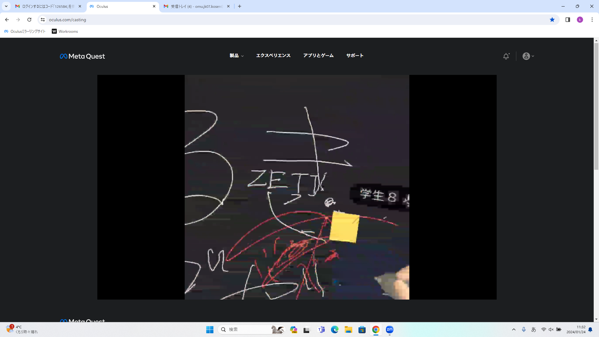

第2週目
2-1 １週目のレポートをHTMLで作る
１週目のレポート
1.内容
Githubを使用し、1週目のホームページと同じような要領で1週目の授業で行ったところをまとめたレポートを作成した。ホームページの作成と違うところは画像やurlの挿入などがある。
2.感想
要所要所で記入した部分を保存しておくことが大切だと学んだ。また作る際に1週目の授業の復習にもなりながら取り組むことができたので良かったと感じた。
2-2 機械学習体験
1.内容
カメラを使った画像を分類する機械学習の体験を行った。機械にグーとチョキとパーのポーズを記憶させ、それを判別できるようにした。図はパーを示しており、わかる通り、正確に判断できている。
2.感想
より正確にするには機械の学習データを増やし、特徴を多く学ばせることが大切であルと学び。また特徴を学ばせるために、自分の顔など余計なものができるだけ入らないようにするために、学習させたい部分のみを全面に画像として、学ばせることことも大切だと感じた。
2-3 VR（バーチャルリアリティー：Virtual Reality）会議室の体験

1.内容
ないようないよう
2.感想
かんそうかんそう